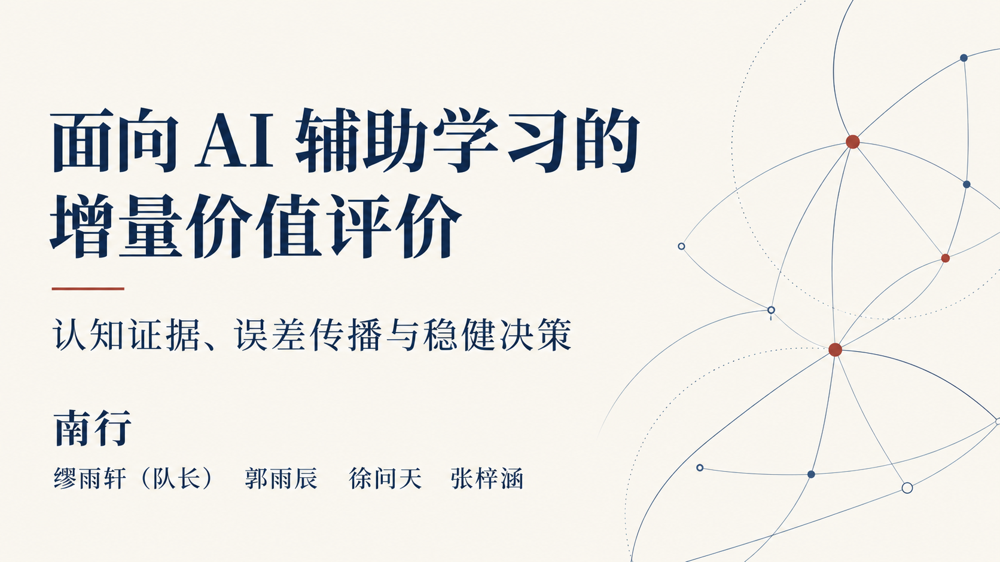
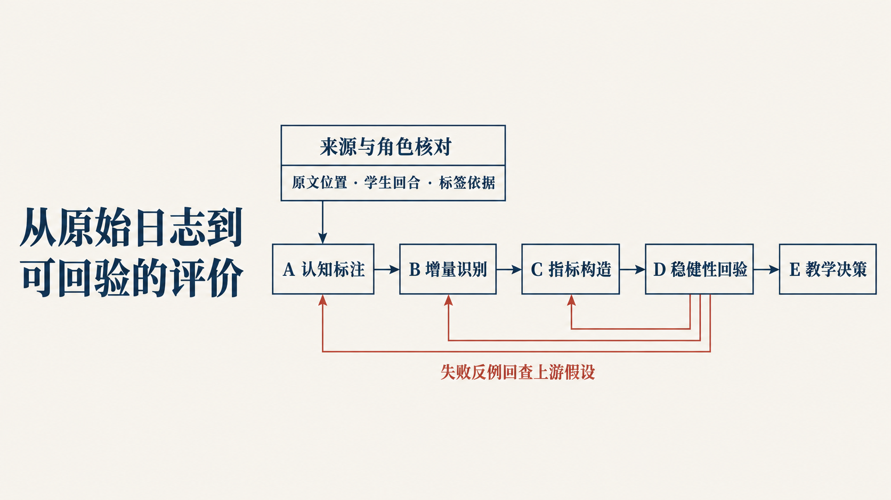
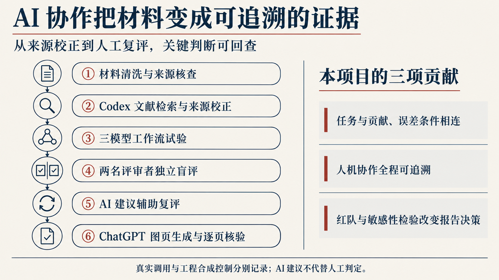
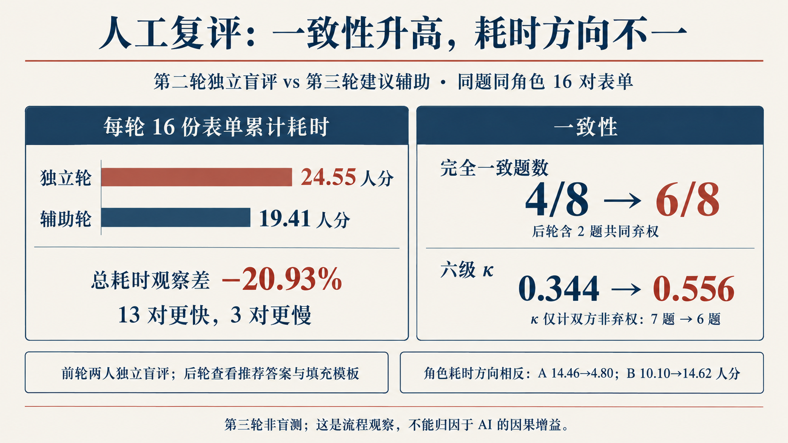
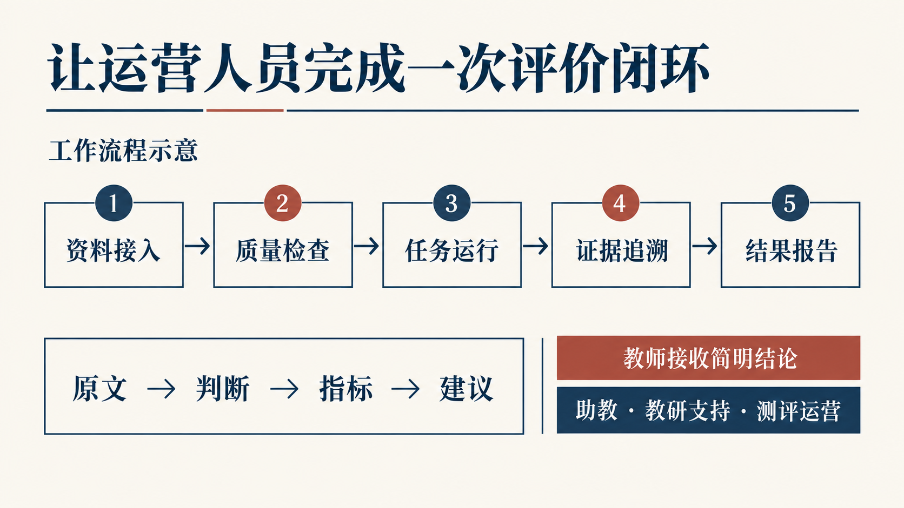
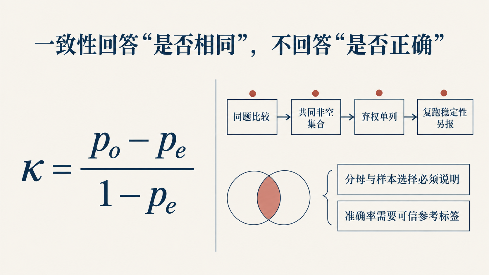
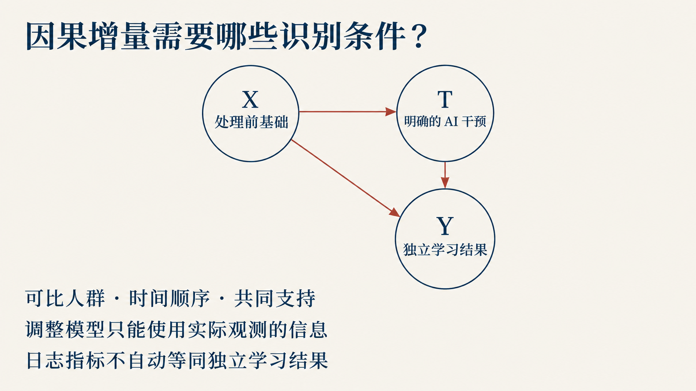
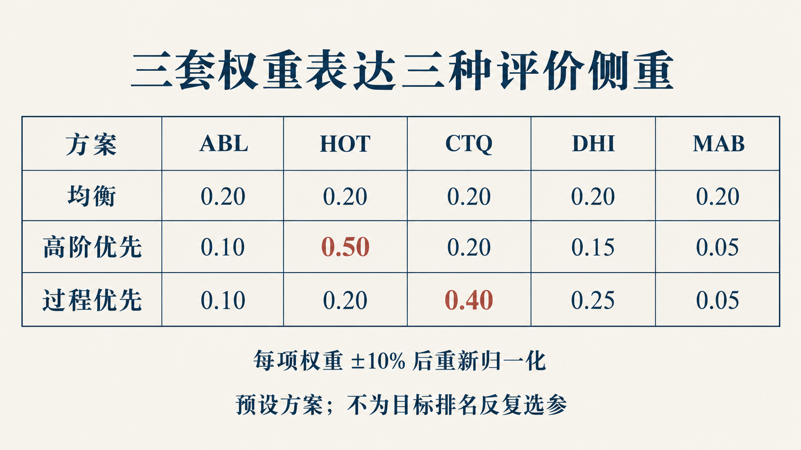

01 · 封面
主讲 · 01A
10页主讲、6页备答、1页致谢。17/17 原生图通过文件验收。验收清单 · 页序和来源 · 现场播放器

01 · 封面
主讲 · 01A

02 · 递进建模主线
主讲 · 02C

03 · AI 协作流程与项目贡献
主讲 · 新生成

04 · 人工复评测试
主讲 · 新生成

05 · 真实逐回合双维分析结果
主讲 · 新生成

06 · 增量识别条件
主讲 · 04C

07 · 新结果与后续评价
主讲 · 新生成

08 · 失败反例回验
主讲 · 06A

09 · 运营评价闭环
主讲 · 07C

10 · 演讲封底
主讲 · 08A

11 · 任务与贡献
备答 · 09A

12 · 人工核验
备答 · 10B

13 · 因果识别条件
备答 · 12B

14 · 权重敏感性
备答 · 13A

15 · 抗操纵反例
备答 · 06A

16 · 仓库与复现
备答 · 14A

17 · 问答结束致谢
致谢 · 15A